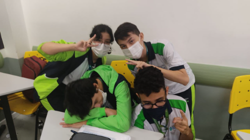
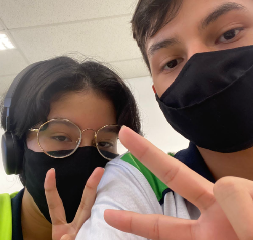

FELIZ ANO NOVO NICOLAS
(ou feliz páscoa, nem sei qnd vou te mandar isso)
Para homenagear meu amigo do peito que eu amo tanto eu fiz esse site totalmente inspirado em você 😁😁
(na vdd eu só aprendi a fazer a bandeira lgbt no fundo e tive essa ideia e eu só to falando isso pq eu sei q a anna ou o lucas vão falar "pq q cê n fez pra nós" e tal, mas eu realmente to pensando em fzr um site nesse mesmo esquema só q com nosso grupinho de quatro tlg enfim já deu de explicações parei de falar já)
10 fatos sobre você
- Vose é guei
- Vosse é poggers
- Voce* é meu amingo
- fiquei sem ideia
- seila
- nós dois gostamos de yung lixo
Nosso cantor favorito
(eu acho né, seu cantor favorito é o yung lixo né diz que sim pfv não deixa eu ficar de xereca aqui não slk)
Não importa se ele não for seu cantor favorito, vc ainda gosta dele (eu acho sla) e eu tb então vou recomendar umas msc dele pra vc (se vc já conhece as msc só aproveite tlg não me humilha 😰)
-
Álbuns tristes pra chorar legal
- Mixtape pra te impressionar (as mscs apagadas)
- Break Up Álbum
-
Melhores álbuns crias de radin
- Quarentapes
- Trashtalk (SEGUNDO MELHOR ALBUM NA MINHA OPINIAO)
- Validation (MELHOR ALBUM NA MINHA OPINIAO)
- BONDA 2 (MELHOR ALBUM DO BONDA)
-
MUSICAS QUE REPRESENTAM NOSSO GRUPINHO DE FOUR
- 4K:
- MINHA MÚSICA FAVORITA ATUALMENTE (descobri ela ontem)
Momentos nossos
(acho que tem mais mas to com preguiça de procurar)
Eu poderia colocar logo foto de nós 4, mas eu real fiquei com preguiça de procurar as foto onde tem todo mundo, então eu só peguei fotos do nico e eu (que era a ideia original) e um videozinho de vcs 3 cantando Demons minha msc favorita aquela do my kingdom cum
Nossa primeira foto ownn
Dormindo com os moradias
Nossa segunda foto eu acho nem sei
Vocês cantando pra mim 😭😭🫂
Textinho pra vocês
Isso é mt gay na minha opinião
Provavelmente não é só o Nico q tá vendo isso e sim a Anna ou o Lucas ou os dois, e talvez vocês estejam vendo isso lá na escola em 2023 já na minha frente falando "OWNN Q FOFINHO SKDJSFDMSLKFDS" e me fazendo querer morrer de vergonha, mas enfim textinho pra vcs aí ó:
Alerta de texto gay!!
Pessoal, quero desejar a todos um feliz Natal e um próspero ano novo. O twitter está cheio de mensagens prontas, q a pessoa nem lê, só muda o nome no final do texto e já envia pros grupos. Não gosto disso. Gosto de escrever o q realmente desejo e que sai do coração, nossa amizade é profunda e jamais seria representada por uma simples mensagem copiada de algum lugar. Então, queria agradecer a todos vocês. Vocês são a melhor equipe de futsal que já joguei, e que esse ano de 2011 seja de muitas conquistas pra nós. Um abraço, ano que vem seremos campeões.
Um grande abraço,
Marcus com U
Tô brincando, clica aqui pra ver o texto real.